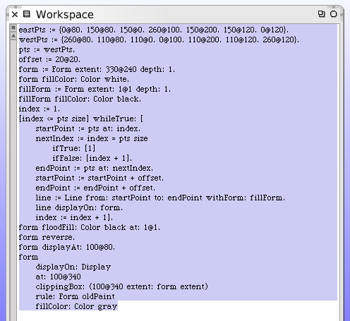
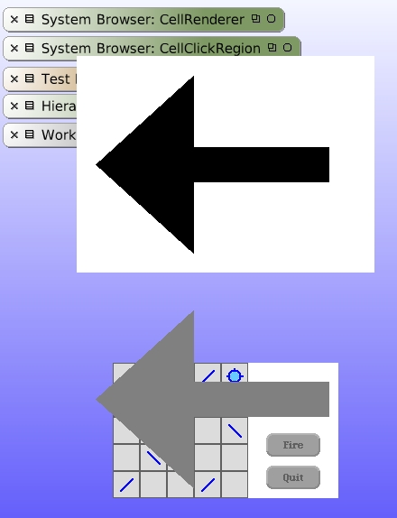
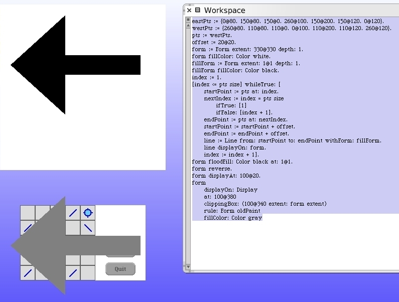
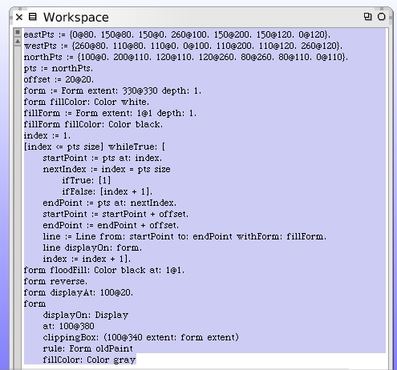
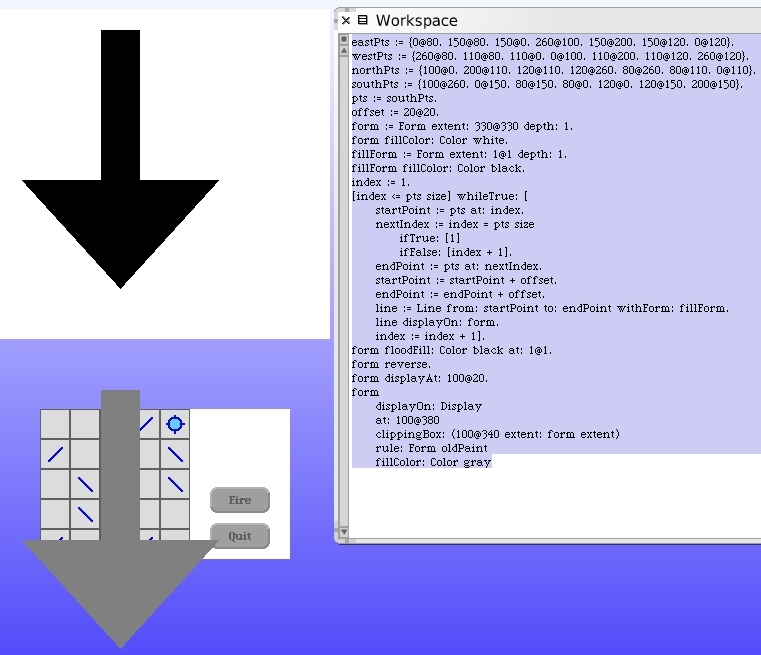

We can use the same workspace for our west-pointing arrow. Note that we did not throw away the pts array for the east arrow. It's still defined in our workspace.
 Once again, restore the display and then execute the workspace code to see our new west arrow. To do the north and south arrow we will want to change the aspect ratio of our target drawing form to be square. Do that first and verify the everything still looks right.
Here's the code for our north arrow. Restore the display and test for yourself that it's correct.
The south arrow code.
